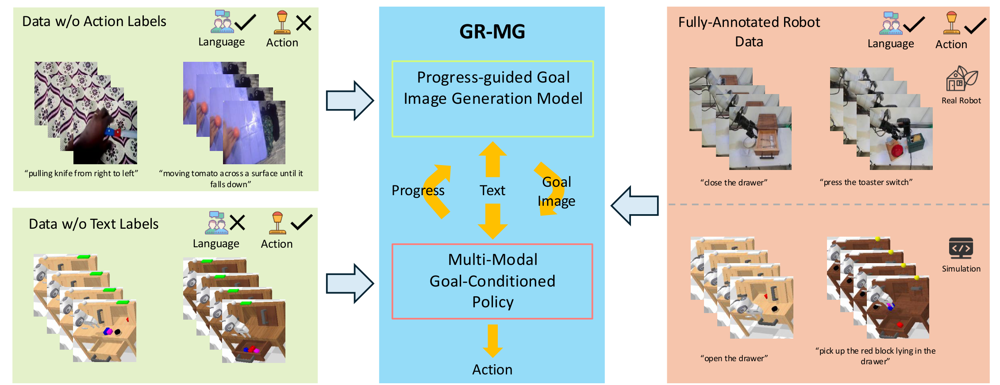
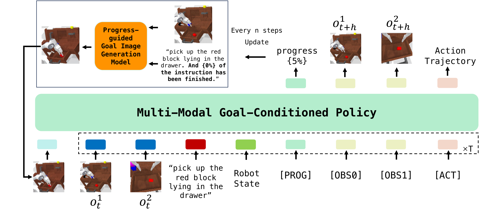
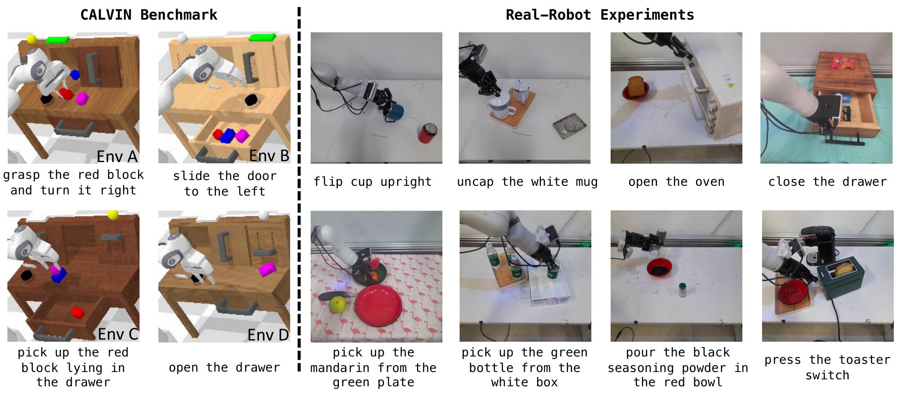
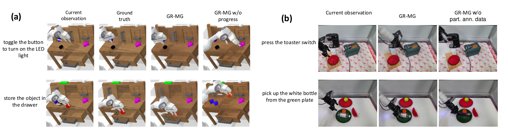
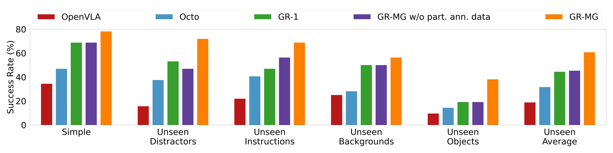

GR-MG: Leveraging Partially-Annotated Data via Multi-Modal Goal-Conditioned Policy
1. 论文速览
难度评级：★★★★☆。阅读需要熟悉语言条件模仿学习、goal-conditioned policy、diffusion image editing、Transformer policy、cVAE 动作轨迹预测，以及 CALVIN 长程评测。
关键词：Robot manipulationPartially annotated dataGoal image generationMulti-modal goal-conditioned policyTask progress
| 阅读定位项 | 精简答案 |
|---|---|
| 论文要解决什么 | 语言条件机器人操作需要同时有动作和文本标注的轨迹，但这种 fully-annotated 数据昂贵；论文要把“有文本无动作的视频”和“有动作无文本的机器人轨迹”都纳入训练。 |
| 作者的方法抓手 | 把目标拆成两级：先用 InstructPix2Pix 风格的进度引导目标图像生成器产生 sub-goal image，再用同时条件于 text + goal image 的 GPT-style policy 预测动作轨迹、未来图像和任务进度。 |
| 最重要的结果 | CALVIN ABC→D 中 5 连续任务平均完成数从 3.35 提到 4.04；真实机器人 simple 设置从 68.7% 到 78.1%，generalization 平均从 44.4% 到 60.6%。 |
| 阅读时要注意的点 | 核心不是单纯“生成好看的目标图”，而是进度条件、text+image 双条件 policy、两类部分标注数据分别进入两个模块的训练路径。 |
核心贡献清单
- 提出 Generative Robot Policy with Multi-modal Goals (GR-MG)，训练时可同时利用缺动作标签和缺文本标签的数据。
- 在目标图像生成阶段加入 task progress condition，用文本追加句子的方式把“已完成百分比”注入 T5 文本编码器。
- 在仿真和真实机器人上验证多任务、分布外泛化、数据稀缺、消融与 few-shot novel skill 学习。

2. 动机
2.1 要解决什么问题
论文关注 language-conditioned visual robot manipulation。一个标准策略可写为：
策略用语言、历史图像和机器人状态直接预测当前动作轨迹。
$$\mathbf{a}_{t} = \pi(l, \mathbf{o}_{t-h:t}, \mathbf{s}_{t-h:t})$$| $l$ | 自然语言任务指令。 |
| $\mathbf{o}_{t-h:t}$ | 从 $t-h$ 到 $t$ 的 RGB 观测序列，论文使用 static camera 和 wrist-mounted camera。 |
| $\mathbf{s}_{t-h:t}$ | 末端执行器 6-DoF 位姿和二值 gripper 状态序列。 |
| $\mathbf{a}_{t}$ | 当前要输出的动作轨迹，而不是单步动作。 |
难点在数据：fully-annotated trajectory 同时包含语言、图像、状态、动作，采集和标注成本都高。相反，text-annotated human activity videos 缺动作但容易从公开视频数据获得；robot trajectories without text labels 缺语言但可由机器人自主或半自主收集。GR-MG 的目标是把这两类数据都转成可训练信号。
2.2 已有方法卡在哪里
论文把已有路线分成两类：一类只利用缺某一种标签的数据，例如从视频学习表征或用无语言机器人轨迹训练；另一类用生成的目标图像/未来视频作为 policy 或 inverse dynamics 的条件。作者指出这些方法通常有两个问题：第一，goal generation 容易忽略任务进度，导致在“当前观测相同但阶段不同”的任务里生成错误目标；第二，如果 policy 只依赖生成图像，生成图一旦偏离语言指令，后续动作预测会变脆弱。
2.3 本文解决思路
GR-MG 的高层设计是“生成式目标 + 多模态条件策略”。生成器负责把语言和当前观测转成中间目标图像；策略不只看这个目标图像，也保留语言条件，因此生成图不准确时仍有文本信号约束动作预测。任务进度由 policy 在 rollout 中预测，再反馈给生成器形成闭环。
4. 方法详解

4.1 数据形式与训练信号分配
fully-annotated trajectory 被写成：
其中语言 $l$、观测 $\mathbf{o}$、状态 $\mathbf{s}$、动作 $\mathbf{a}$ 都可用。GR-MG 把数据按标签缺失方式拆给不同模块：
| 数据类型 | 包含什么 | 用于训练哪个模块 | 训练时如何使用 |
|---|---|---|---|
| fully-annotated robot trajectories | 语言、图像、状态、动作 | 两个模块 | 生成器用当前帧、语言、未来帧、进度；policy 用语言、真实目标图、历史观测/状态和动作。 |
| data w/o action labels | 有文本的视频，无动作 | goal image generation model | 不需要动作，只要从视频中采样当前图和未来目标图即可。 |
| data w/o text labels | 有动作的机器人轨迹，无文本 | multi-modal goal-conditioned policy | 用 null string 作为文本条件，先训练 policy，再用 fully-annotated 数据 finetune。 |
4.2 Progress-guided Goal Image Generation Model
生成器基于 InstructPix2Pix，一个 diffusion-based image-editing model。输入是当前观察图像、文本任务描述和任务进度，输出是 $N$ steps 之后的 sub-goal image。作者沿用 Susie 的 sub-goal 思路，不直接生成最终状态，而是定期更新中间目标。
附录 Data / Generation Model 给出复现细节：图像先 resize 到 $256\times256$；训练样本为 $(l, o_t, o_{t+k}, p)$；goal image 由未来 $k_\mathrm{min}$ 到 $k_\mathrm{max}$ 范围内的帧采样；latent diffusion 使用 VAE image encoder、U-Net denoising、text cross-attention 和 classifier-free guidance；推理 denoising steps 为 50。
| 数据集 | $k_\mathrm{min}$ | $k_\mathrm{max}$ | 说明 |
|---|---|---|---|
| CALVIN | 20 | 22 | 仿真基准。 |
| Something-Something-V2 | 11 | 14 | 文本标注人类活动视频。 |
| RT-1 | 5 | 6 | 真实机器人数据，用于扩展生成器训练。 |
| Real | 30 | 35 | 本文真实机器人数据。 |
4.3 Multi-modal Goal-Conditioned Policy
policy 继承 GR-1 的 GPT-style Transformer 结构，但做了三处关键改动：
- 加入 goal image condition：用 MAE tokenization 编码生成的目标图像，并把这些 token 放到输入序列前端，使后续 token 可 attend 到目标图。
- 加入
[PROG]query token：该 token 的输出 embedding 经线性层回归 task progress。 - 用 cVAE 预测 $k$ 步动作轨迹：将 action trajectory 编成 style vector，再和
[ACT]token 输出、$k$ 个 learnable token 一起送入 Transformer 解码动作轨迹。
附录 Multi-modal Goal Conditioned Policy 进一步说明：每张图先编码成 196 个 patch tokens 和 1 个 global token；196 个 patch tokens 经 Perceiver Resampler 降到 9 个 token；语言用 CLIP 编码；机器人状态用线性层编码；所有 token 通过线性层对齐到 GPT hidden size。GPT hidden size 为 384，12 heads，12 layers。
Algorithm: GR-MG inference loop
Input: text instruction l, observation/history o, robot state s
progress p = 0
Every n steps:
prompt = l + " And {p}% of the instruction has been completed."
goal_image = ProgressGuidedGenerator(current_image, prompt)
Each policy step:
tokens = [MAE(goal_image), CLIP(l), MAE(o_{t-h:t}), Linear(s_{t-h:t}), [PROG], [OBS], [ACT]]
action_trajectory, future_images, progress = GPTPolicy(tokens)
execute first part of action_trajectory
feed predicted progress back to generator at next goal update
4.4 训练目标
goal image generation model 按 DDPM 噪声预测方式训练；policy 则同时预测动作、未来图像和进度。policy loss 为：
这不是单一行为克隆损失，而是动作、图像预测、VAE 正则和进度回归共同约束。
$$L = l_\mathrm{arm} + 0.01 l_\mathrm{gripper} + 0.1 l_\mathrm{img} + l_\mathrm{kl} + l_\mathrm{prog}$$| $l_\mathrm{arm}$ | 机械臂动作预测损失。 |
| $l_\mathrm{gripper}$ | 夹爪动作预测损失，权重 0.01。 |
| $l_\mathrm{img}$ | 未来图像预测损失，权重 0.1，沿用 GR-1 训练信号。 |
| $l_\mathrm{kl}$ | cVAE 的 KL divergence。 |
| $l_\mathrm{prog}$ | 任务进度预测损失，输出被反馈给生成器。 |
5. 实验

5.1 实验设置
| 实验组 | 数据与设置 | 评测问题 |
|---|---|---|
| CALVIN ABC→D | 在 Env A/B/C 训练，Env D 测试；约 18k fully-annotated trajectories；评测 1000 条 5-task chains。 | 多任务与 unseen environment 泛化。 |
| CALVIN data scarcity | 只用 10% fully-annotated 数据，约 1.8k trajectories / 0.1M frames；同时用 Env A/B/C 中 1M frames 的无文本轨迹先训练 policy。 | 缺 fully-annotated 数据时，data w/o text labels 是否有帮助。 |
| 真实机器人 | Kinova Gen-3 + Robotiq 2F-85 + static/wrist cameras；18k demonstrations，37 个训练任务；训练生成器时加入 SSV2 和 RT-1。 | simple、unseen distractors、unseen instructions、unseen backgrounds、unseen objects 的泛化。 |
| few-shot novel skills | 从 37 个任务 hold out 8 个任务，其中 7 个为 novel skills；先在 29 个任务/15k trajectories 训练，再用每任务 10 或 30 条轨迹 finetune。 | 新技能少样本学习能力。 |
5.2 CALVIN 主结果
| 方法 | 1 task | 3 tasks | 5 tasks | Avg. Len. |
|---|---|---|---|---|
| 3D Diff Actor | 93.8% | 66.2% | 41.2% | 3.35 ± 0.04 |
| GR-MG w/o image | 91.0% | 67.8% | 47.7% | 3.42 ± 0.28 |
| GR-MG w/o text | 91.8% | 68.9% | 48.1% | 3.46 ± 0.04 |
| GR-MG w/o progress | 94.1% | 75.2% | 56.3% | 3.76 ± 0.11 |
| GR-MG | 96.8% | 81.5% | 64.4% | 4.04 ± 0.03 |
主表最关键的读法是看 long-horizon 指标：单任务成功率从 93.8% 到 96.8% 的提升不大，但 5 连续任务从 41.2% 到 64.4%，平均完成长度从 3.35 到 4.04，说明误差累积下的鲁棒性提升更明显。w/o text 和 w/o image 性能相近且都低于完整模型，支持论文关于 text + image 双条件互补的结论。
5.3 数据稀缺与部分标注数据
| 方法 | fully-annotated data | partially-annotated data | 1 task | 5 tasks | Avg. Len. |
|---|---|---|---|---|---|
| GR-1 | 10% | 否 | 67.2% | 6.9% | 1.41 ± 0.06 |
| GR-MG w/o part. ann. data | 10% | 否 | 82.4% | 19.7% | 2.33 ± 0.04 |
| GR-MG | 10% | 是 | 90.3% | 37.5% | 3.11 ± 0.08 |
在只给 10% 完整标注数据时，额外 1M frames 的无文本轨迹显著提高 policy 能力。作者观察到 w/o part. ann. data 往往能生成正确目标图，但 policy 跟随目标图能力不足，因此无文本机器人轨迹主要补强的是 policy，而不是生成器。
5.4 进度条件消融
| 方法 | MSE ↓ | PSNR ↑ | SSIM ↑ | CD-ResNet50 ↑ |
|---|---|---|---|---|
| GR-MG w/o progress | 965.347 | 18.821 | 0.721 | 0.945 |
| GR-MG | 903.139 | 19.121 | 0.730 | 0.946 |
这组实验把“progress condition 是否只是额外 prompt 装饰”变成可检验问题。四个目标图相似度指标都改善；定性图显示 w/o progress 可以生成视觉质量较高但与语言不一致的目标图，而完整模型更接近 ground truth。

5.5 真实机器人结果

真实机器人共评估 58 个任务。论文报告 GR-MG 在 simple 设置中把平均成功率从 68.7% 提到 78.1%，在四类 generalization 平均中从 44.4% 提到 60.6%。作者还逐一解释了 baseline 的典型失败：OpenVLA 的离散动作空间与缺少历史/腕部相机输入影响抓取与开合夹爪时机；Octo 有历史和 proprioception，但 unseen backgrounds / objects 泛化较弱；GR-1 在 unseen objects 中容易选错对象。对比 w/o part. ann. data 时，作者把改进归因于额外缺动作标签视频提升语言语义理解和 OOD 鲁棒性。
5.6 Few-shot Novel Skills
| 方法 | 10-shot | 30-shot |
|---|---|---|
| OpenVLA | 0.0% | 2.5% |
| Octo | 0.0% | 0.0% |
| GR-1 | 2.5% | 22.5% |
| GR-MG w/o part. ann. data | 10.0% | 27.5% |
| GR-MG | 17.5% | 37.5% |
few-shot 部分的一个重要观察是：目标图生成器在少样本 finetune 后能生成较准确目标图，但 policy 仍是主要瓶颈。这个观察和结论中的 future work 对应，即进一步扩大 policy 的真实世界无文本轨迹训练。
6. 复现审计
6.1 代码与资源
已公开：官方 GitHub 为 bytedance/GR-MG。README 中给出 goal image generation model 与 multi-modal goal-conditioned policy 的安装脚本、训练脚本和 CALVIN 评估脚本，并提供 policy checkpoint、goal generation checkpoint、InstructPix2Pix、MAE 和 CALVIN 数据下载入口。
依赖较重：官方 README 标注测试环境为 CUDA 12.1 + Python 3.9；goal generation 与 policy 分别安装依赖。复现不仅需要 CALVIN，还涉及 Ego4D pretraining checkpoint 或自行预训练。
6.2 关键超参数
| 项目 | Goal Image Generation Model | Multi-modal Goal-Conditioned Policy |
|---|---|---|
| batch size | 1024 | 512 |
| learning rate | 8e-5 | 1e-3 |
| optimizer | AdamW | AdamW |
| weight decay | 1e-2 | 0 |
| Adam beta1 / beta2 | 0.95 / 0.999 | 0.9 / 0.999 |
| epochs | 50 | 50 |
附录 Training：生成器在 16 张 NVIDIA A100 80GB 上训练 50 epochs，CALVIN 约 18 小时，真实机器人约 30 小时；policy 在 32 张 NVIDIA A800 40GB 上训练 50 epochs，CALVIN 约 17 小时，真实机器人约 7 小时。生成器训练使用 CenterCrop、ColorJitter，EMA 对稳定性能很关键。
6.3 复现路径
- 准备官方环境：分别安装
goal_gen/install.sh与policy/install.sh所需依赖。 - 下载 InstructPix2Pix 权重到
resources/IP2P/，下载 MAE encoder 到resources/MAE/，准备 CALVIN 数据。 - 训练目标图生成器：修改
goal_gen/config/train.json后运行bash ./goal_gen/train_ip2p.sh ./goal_gen/config/train.json。 - policy 预训练：可使用作者提供的 Ego4D-pretrained checkpoint，也可用
bash ./policy/main.sh ./policy/config/pretrain.json自行预训练。 - 训练 policy：设置
/policy/config/train.json中的 pretrained model path，运行bash ./policy/main.sh ./policy/config/train.json。 - CALVIN 评估：运行
bash ./evaluate/eval.sh ./policy/config/train.json，并在脚本中指定 goal generation model 与 policy checkpoint。
7. 分析、局限与边界
7.1 这篇论文最有价值的地方
从论文自己的实验设计看，价值集中在“把两种不同缺失标签的数据分别接入不同模块”这一点。缺动作标签的视频不适合直接监督 action，但适合训练“当前图 + 语言 + 进度 → 未来目标图”；缺文本标签的机器人轨迹不适合训练语言理解，但适合训练 goal image conditioned policy 如何把视觉目标转成动作。这种模块分工让 partially-annotated data 的使用路径比较清楚。
7.2 结果为什么站得住
论文不是只给单一主表，而是用多组互相对应的证据支撑核心设计：CALVIN 主表验证完整 GR-MG 的 long-horizon 提升；w/o text、w/o image 验证双模态条件；w/o progress 与目标图相似度指标验证进度条件；10% data scarcity 验证无文本机器人轨迹对 policy 有用；真实机器人 w/o part. ann. data 和生成图可视化验证缺动作标签视频对生成器和 OOD 目标理解有帮助。few-shot 部分还指出 policy 是瓶颈，和结论里的扩展方向一致。
7.3 作者自述的局限与未来方向
- 两个模块目前独立训练：生成器用 timestep 得到 progress 和 ground-truth future frame，policy 用 ground-truth goal image；作者把联合训练留作未来工作。
- few-shot novel skills 中，目标图生成器可生成准确目标图，但 policy 仍难以执行，作者计划用更多真实世界 data w/o text labels 扩大 policy 训练。
- 结论中还提出要扩大两个模块的 partially-annotated data 训练规模，并考虑引入 depth information 提升动作预测准确性。
7.4 适用边界
GR-MG 适用于能从视觉中表达中间目标状态的操作任务，并假设生成器可以定期生成对 policy 有用的 sub-goal image。对于目标无法通过单张 RGB sub-goal 表达、深度/接触信息关键、或 policy 对真实执行动力学要求极高的任务，论文没有给出充分覆盖。真实机器人实验虽包含非 pick-and-place 任务与多类 OOD 设置，但仍是在作者自建平台、相机配置和任务集合内验证。